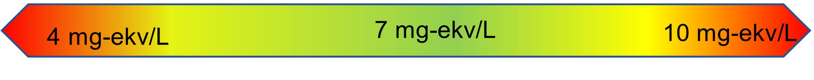
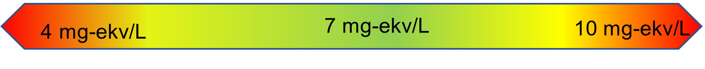
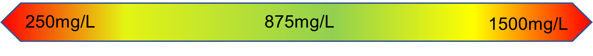
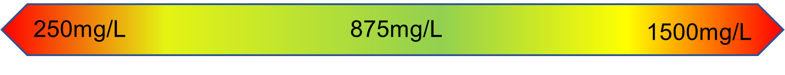
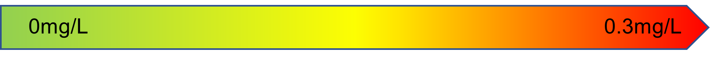
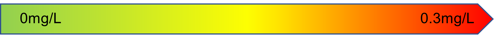

Yer osti ichimlik suvining sifat indeksini hisoblaydigan ushbu kalkulyator quyidagi o'nta indikator bo'yicha hisoblaydi: Vodorod - ko'rsatkichi (\(pH\)), Kaliy permanganatli oksidlanish qobilyati(\(OA (KMnO_4)\)), Nitrat (\(NO_3^-\)), Umumiy qattiqligi (\(TH\)), Umumiy minerallanishi (\(TDS\)), Xlorid (\(Cl^-\)), Sulfat (\(SO_{4}^{2-}\)), Temir (\(Fe^{2+}\)), Ftor (\(F^-\)), Mis (\(Cu^{2+}\)).


 
 


 



Dinamik Vaznsiz o'rtacha Suv Sifati Indeksi(WQI):
WQI
Yaxshi (81-100)
O'rtacha (51-80)
Qoniqarli (30-50)
Qoniqarsiz (0-29)
| WQI | Tavsif |
|---|---|
| Yaxshi (81-100) |
Bu toifadagi suv a'lo darajadagi sifatga ega bo'lib, yer yuzasidagi mavjud tashkilotlar tomonidan tavsiya etilgan inson iste'moli uchun barcha xavfsizlik standartlariga javob beradi. |
| O'rtacha (51-80) |
Bu toifadagi suv o'rtacha sifatga mansub bo'lib, inson iste'moli uchun umuman xavfsiz, lekin kichik muammolarni hal qilish uchun ba'zi suv sifatini yaxshilash uchun chora-tadbirlar amalga oshirilishini talab qilishi mumkin. |
| Qoniqarli (30-50) |
Bu toifadagi suv qoniqarli sifat darajasiga ega bo'lib, suv organizmlari va ekosistemalar uchun qisman talabga javob beradi, lekin inson iste'moli uchun jiddiy ishlov berishni talab qilishi mumkin. |
| Foydalanishga yaroqsiz (0-29) |
Bu toifadagi suv foydalanishga yaroqsiz bo'lib, tolerant organizmlar uchun mos bo'lishi mumkin, lekin sezgir organizmlar va agro-ekosistemalarning suvga bo'lgan ehtiyojini qondirishda foydalanish uchun qat'iy chora-tadbirlarni amalga oshirishni talab qiladi. |